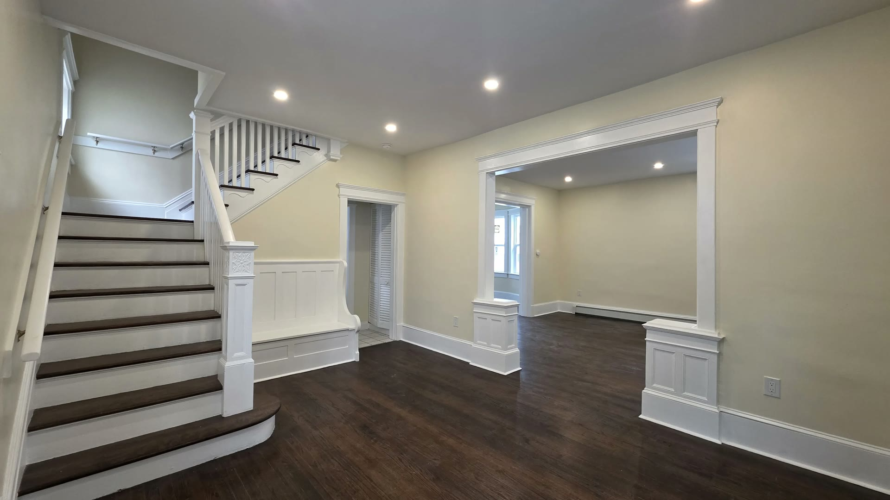

PSI Construction · Kingston & Wilkes-Barre, PA
Whole-House Renovation Contractor in Luzerne County, PA
A whole-house renovation is a hundred small jobs that have to happen in the right order. We run them as one — demolition, structure, systems, finishes — so the house comes back together without the gaps that happen when five trades are each waiting on the others.
How it goes
How we run a whole-home renovation
-
1
Survey & scope
Every room walked, every system assessed. A fixed scope and a sequenced plan before anything comes out.
We walk every room with you and write down what stays, what goes and what it should become. The structure, roof, electrical service, plumbing and heating are assessed so there are no surprises mid-job. From that we build a fixed scope, a sequence of work and a schedule, and we price it against drawings — the budget is set before demolition, not discovered during it.
-
2
Strip out
Back to the framing where it needs to be, no further than it has to be.
Demolition is done room by room, back to the framing only where the plan needs it. Finishes that are staying are protected, salvageable material is set aside, and debris goes out in containers on a schedule rather than piling up. Anything the walls were hiding — rot, old wiring, undersized framing — is found now and dealt with while it is cheap to reach.
-
3
Structure & re-frame
Load paths corrected, openings moved, new walls laid out for the new plan.
Load-bearing walls that come out are replaced with engineered beams and posts carried down to proper footings. Openings are moved or enlarged, new partitions laid out for the new plan, floors levelled and stiffened where they need to be. This is the stage where a 1920s layout becomes an open one without the house sagging to tell you about it.
-
4
Systems
Plumbing, electrical and HVAC run new through the open framing, inspected before close-up.
With the framing open, plumbing, electrical and HVAC are run new: a modern panel and circuits, PEX or copper supplies, proper venting, ductwork or mini-splits sized for the new layout. Each system is inspected before a single sheet of drywall goes up. Old knob-and-tube, galvanised pipe and makeshift repairs leave the house for good.
-
5
Board, tile & floor
Drywall, bathrooms tiled, kitchens set, floors laid.
Insulation and drywall throughout, then the wet rooms: bathrooms waterproofed and tiled, the kitchen's cabinets and counters set. Flooring is run continuously through the new plan so rooms read as one house. You will be in for selections at this point — tile, stone, fixtures, paint — with our guidance on what will last.
-
6
Finish & move back in
Paint, trim, fixtures, hardware. One punch list, one handover.
Paint, interior doors and trim, lighting and plumbing fixtures, hardware, and the exterior details that complete it. One punch list walked with you, every item closed, final inspection passed. You move back into a house that works like a new one and still looks like yours.
Work we’ve done
From our jobs
Swipe through the photographs. Tap one to see the whole job, start to finish.
Whole-house renovation questions
We work in Kingston, Wilkes-Barre, Forty Fort, Wyoming, West Pittston, Exeter, Swoyersville, Luzerne, Edwardsville, Plymouth, Nanticoke, Plains, Pittston, Dallas, Shavertown, Trucksville, Mountain Top, Hanover Township and Scranton. Larger jobs, up to about an hour away: Lake Wallenpaupack, Hamlin and the Poconos.
570-338-8PSI (774)Can you renovate a house after a fire or water damage?
Yes. We have rebuilt a house after a fire took the roof structure, and we work on insurance repairs. We strip back to what is sound, correct the structure, and rebuild the systems and finishes as one job.
Do you work on rental properties and multi-family buildings?
Yes. We renovate rentals, turn duplexes into single-family homes and the other way round, and do turnovers for landlords and property managers.
How do you keep a big renovation on budget?
Every room is walked and every system assessed before a fixed scope and price are written. Work is sequenced by one team, so trades are not waiting on each other, and anything that changes is priced and agreed in writing before it is done.
Do you pull the permits?
Yes. We pull the permits, deal with the township and book the inspections as part of the job, so you are not chasing paperwork while the work is running.
What areas do you serve?
Our office is at 190 Wyoming Street in Wilkes-Barre. We take whole-home renovation work across Luzerne County and into Lackawanna County — Kingston, Wilkes-Barre, Forty Fort, Wyoming, West Pittston, Pittston, the Back Mountain, Mountain Top, Nanticoke and Scranton. For larger projects we travel further, up to about an hour away — Lake Wallenpaupack, Hamlin and the Poconos.
Are you licensed and insured?
PSI Construction, LLC is a registered Pennsylvania home improvement contractor, PA HIC #213035, and carries insurance for the work we do.
Get a quote
Tell us about your whole-home renovation project
A few multiple-choice questions so we show up already knowing the job. Every one has a “not sure yet” option. Or call — 570-338-8PSI (774).